นิทรรศการเดี่ยว · ชุดผลงาน

At The End
You Must Wake Up
ดนย บุญทัศนกุล · Danaya Buntasnakul
จิตรกรรมสีน้ำ หมึก และลายเส้นบนกระดาษ
เลื่อนลง
ดนย บุญทัศนกุล ทำงานอยู่บนเส้นแบ่งบาง ๆ ระหว่างการหลับและการตื่น ระหว่างโลกที่เรามองเห็นกับโลกที่เราเพียงรู้สึกถึง
เขาผสมสีน้ำ หมึก และจังหวะแบบดนตรีเข้าด้วยกัน จนภูมิทัศน์กลายเป็นห้วงความฝัน และความฝันกลายเป็นที่ที่เรากล้าเผชิญสิ่งที่ตื่นอยู่เรากลับไม่ยอมรับ
เขาเรียนจิตรกรรมที่มหาวิทยาลัยเชียงใหม่ (ศิลปมหาบัณฑิต) และเคยศึกษาที่ L'Accademia di Belle Arti di Firenze ประเทศอิตาลี ผ่านนิทรรศการเดี่ยว 6 ครั้งในรอบ 15 ปี งานของเขาวนเวียนอยู่กับความใกล้ชิด การพลัดพราก และโอกาสที่หมุนกลับมาใหม่ได้เสมอ—เหมือนนาฬิกาทรายที่เพียงรอวันถูกพลิก
นอกจากเป็นจิตรกร เขายังเป็นนักแสดงละครเวทีและนักร้องประสานเสียงที่ได้รับรางวัลระดับนานาชาติ ประสบการณ์บนเวทีและในเสียงเพลงไหลกลับเข้ามาในงานวาด ในรูปของจังหวะ การฟัง และการมองอย่างช้า ๆ
นิทรรศการนี้ขอชวนผู้ชมเดินผ่านความฝันหนึ่งคืน เริ่มจากภาพของสุนัขจิ้งจอกที่ขดตัวหลับกลางทุ่ง—ภาพแทนของจิตใจที่กำลังพักผ่อนเพื่อจะหายดี ก้อนเมฆแปลงร่างเป็นสัตว์ ปราสาทเล็ก ๆ ตั้งอยู่บนหลังของมัน ทุกอย่างค่อย ๆ จมลงสู่ห้วงฝัน
At The End You Must Wake Up คือบันทึกของเรื่องที่เกิดขึ้นแล้วผ่านไป แต่ส่วนลึกของใจยังไม่ยอมปล่อยความรู้สึกที่อยู่นอกเหนือการควบคุม การวาดชุดนี้จึงเป็นการบำบัดตัวเอง—กล่อมใจให้หลับอยู่ในฝัน จนถึงวันหนึ่งที่ใจถูกชำระจนใส และพร้อมจะลืมตาตื่นขึ้นอีกครั้ง
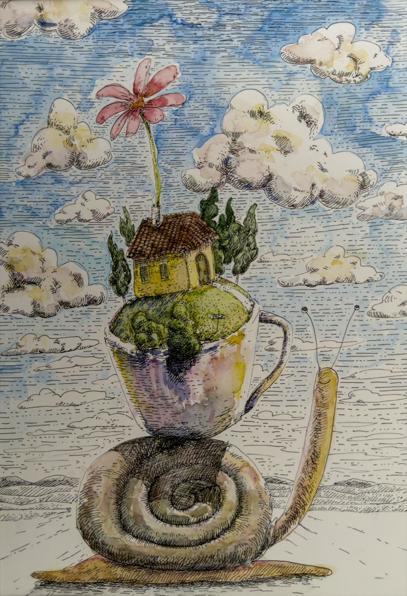
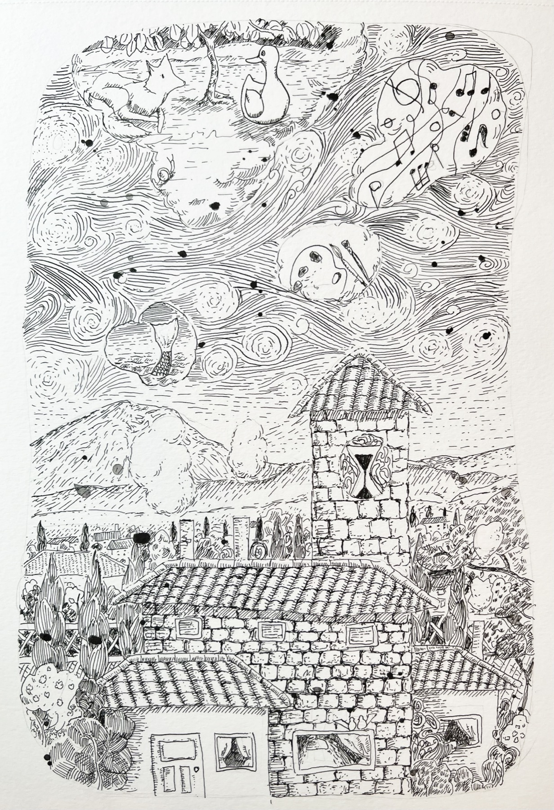
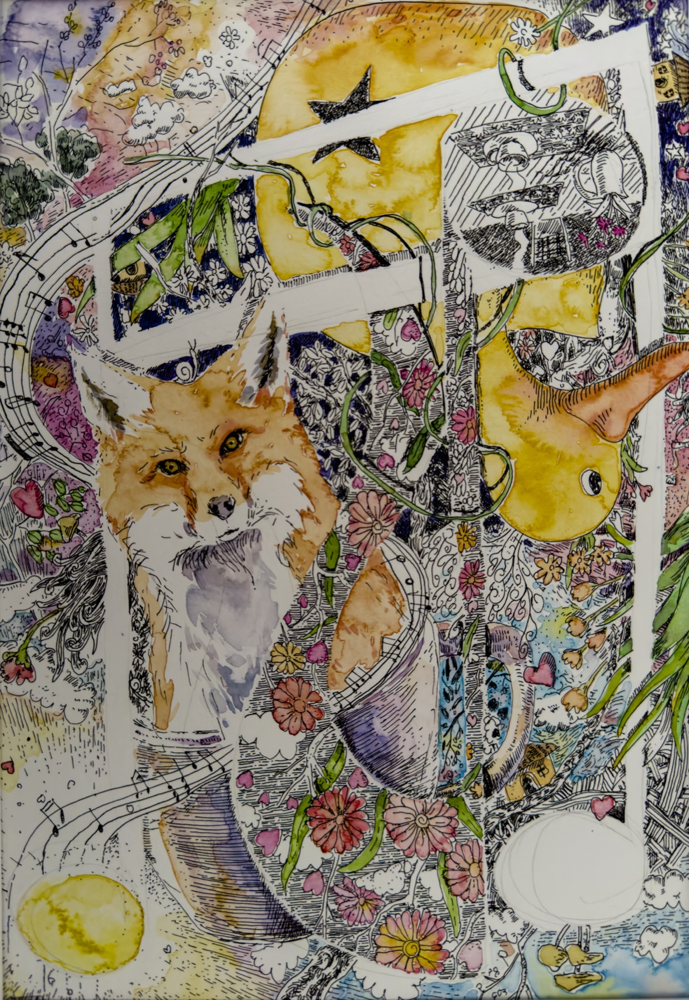
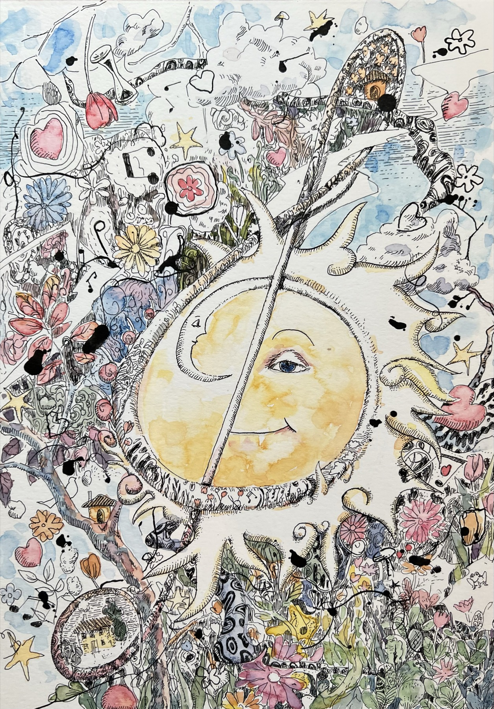
โอกาสผ่านมาแล้วผ่านไป หลายเรื่องเริ่มต้นและจบลงอย่างไม่มีเยื่อใย เหมือนความฝันที่เราไม่อยากลืมตาตื่น นาฬิกาทรายมีความหมายมากกว่าเครื่องนับเวลาถอยหลัง เมื่อทรายหมด มันเพียงนิ่งรอวันถูกพลิกกลับ เพื่อเริ่มต้นใหม่อย่างไม่รู้จบ—เช่นเดียวกับความรัก ความสัมพันธ์ ชีวิต และโอกาส งานหมึกในองก์นี้คือ "ภายใน" ของนาฬิกาเรือนนั้น: เส้นที่ถักทอกันแน่นจนเวลากลายเป็นวัฏจักร
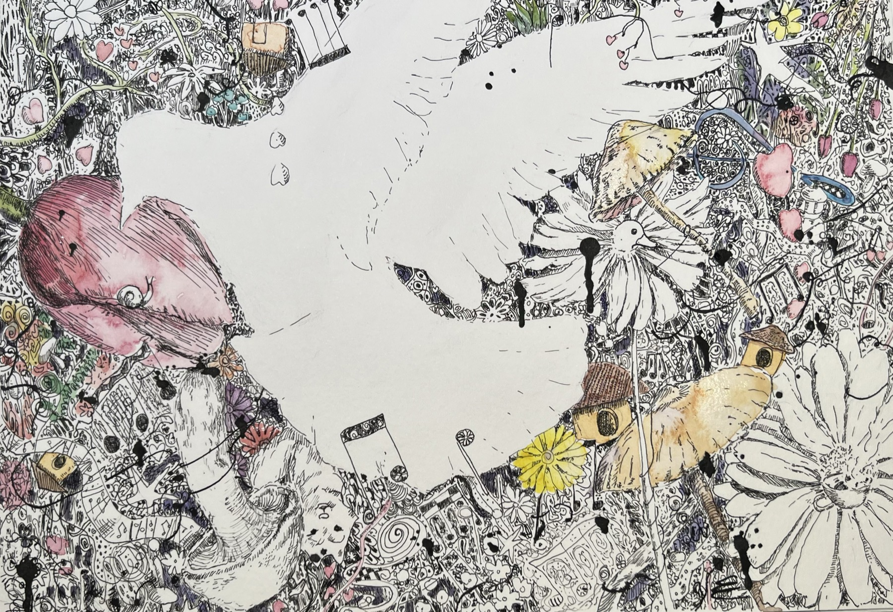
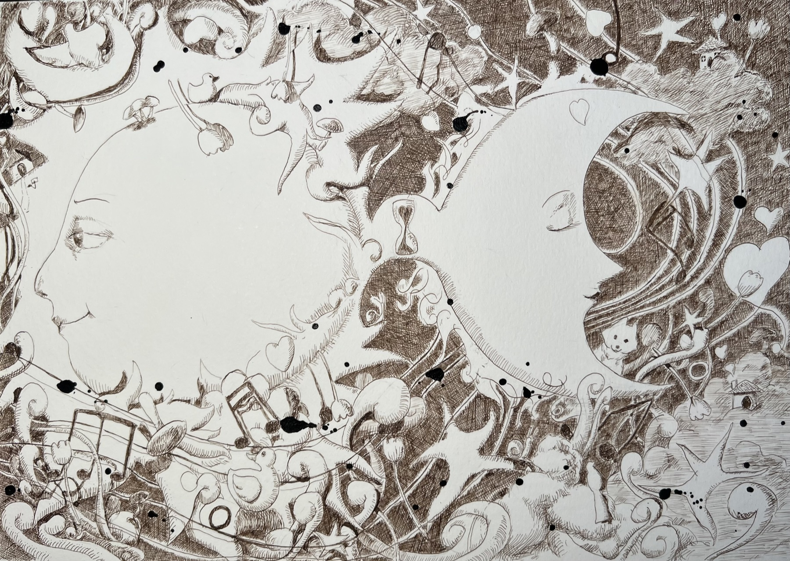
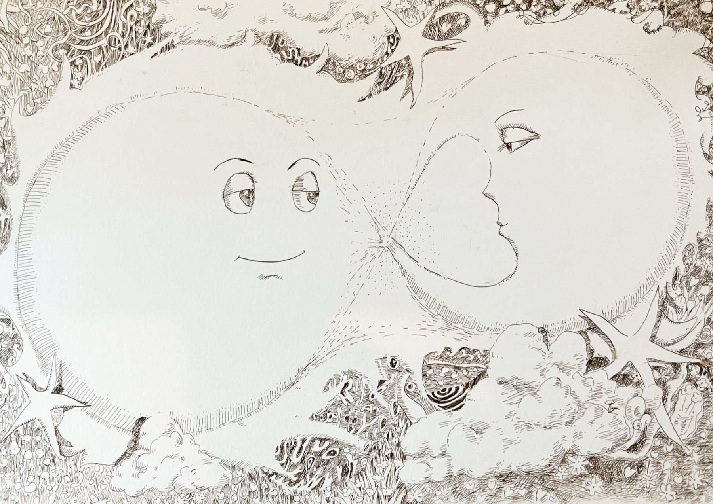
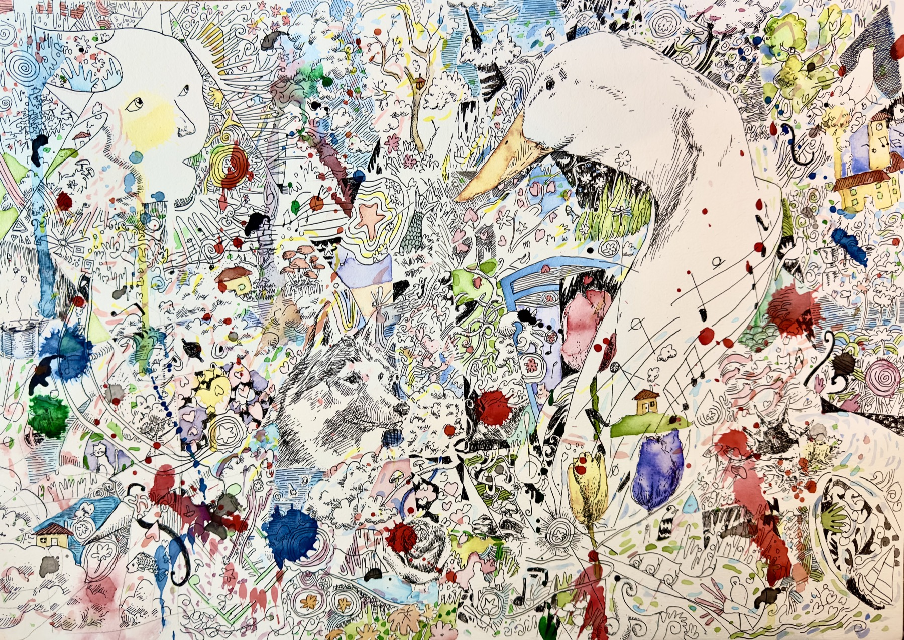
OSHO ว่าไว้ว่า ปัญญาญาณเปรียบเหมือนสะพานที่เชื่อมทางให้เราเดินกลับสู่บ้านที่แท้จริง—บ้านที่มีอยู่มาตลอด ตั้งอยู่ตรงนั้นก่อนเราเกิดและหลังเราตาย เราไม่ใช่เจ้าของบ้าน เราเป็นส่วนหนึ่งของมัน สะพานที่พาไปสู่บ้านนั้นซ่อนอยู่ทั่วทุกหนแห่ง—ในแววตาของสุนัขใต้แดด ในควันบาง ๆ จากถ้วยกาแฟ หรือแม้แต่ในภาพวาดสักภาพ ลายเส้นหมึกบนกระดาษชุดนี้ คือสิ่งที่ศิลปินค้นพบแล้วนำกลับมาเล่า
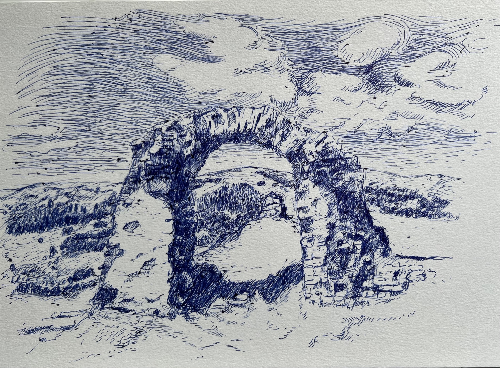
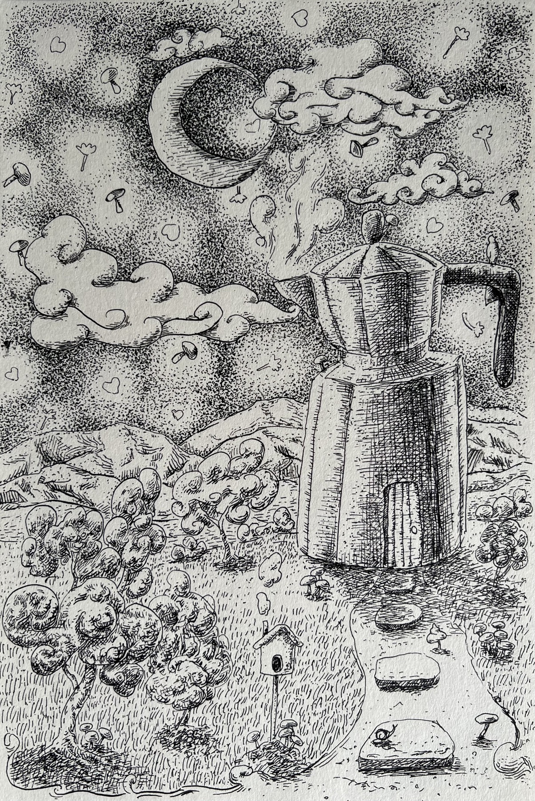
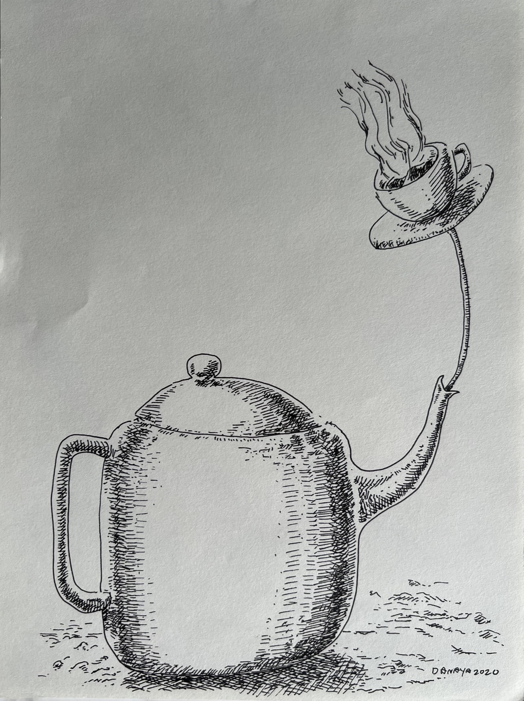
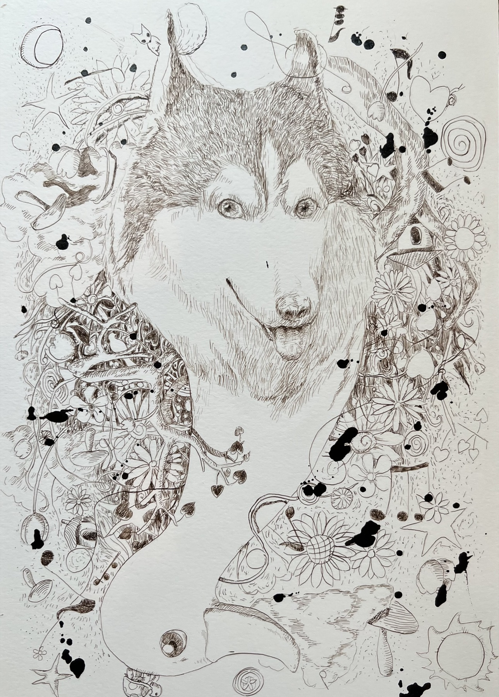
เมื่อใจถูกชำระจนใส ภาพก็เปลี่ยนน้ำหนัก—จากหมึกหนาในความฝัน สู่สีน้ำที่โปร่งและมีแสง ภูมิทัศน์เหล่านี้บางส่วนคือความทรงจำจากอิตาลี บางส่วนคือหมู่บ้านชาวประมงและท้องทุ่งใกล้บ้าน—โลกที่รอเราอยู่เมื่อเราลืมตาตื่น
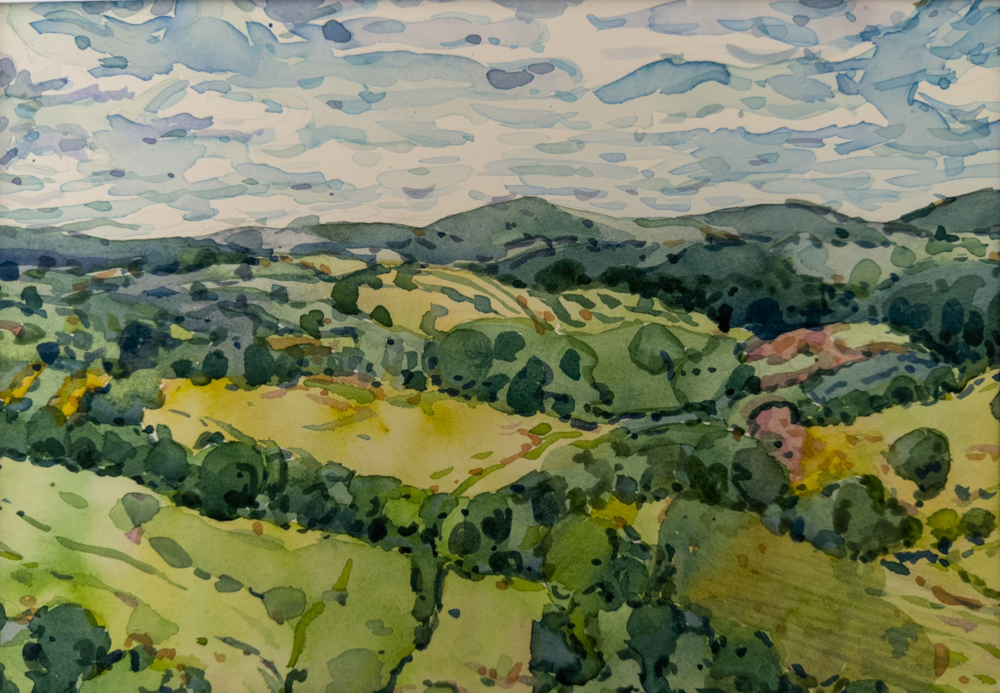
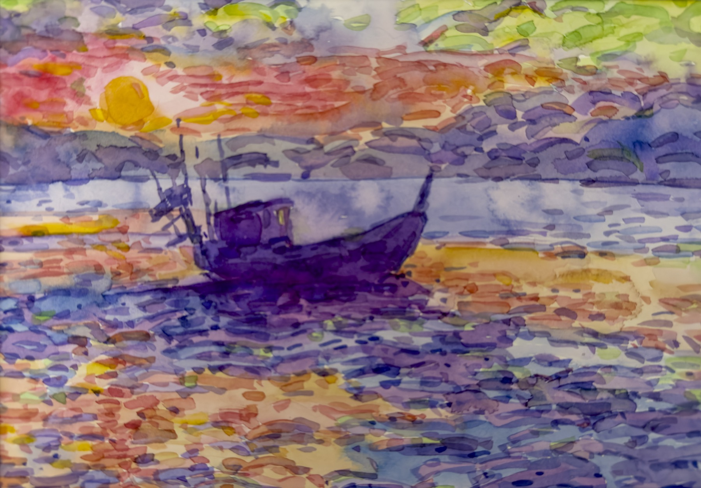